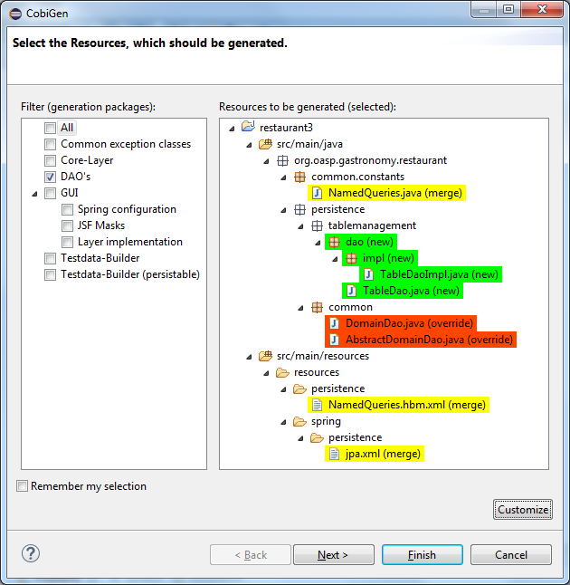

Usage
CobiGen has two different generation modes depending on the input selected for generation. The first one is the simple mode, which will be started if the input contains only one input artifact, e.g. for Java an input artifact currently is a Java file. The second one is the batch mode, which will be started if the input contains multiple input artifacts, e.g. for Java this means a list of files. In general this means also that the batch mode might be started when selecting complex models as inputs, which contain multiple input artifacts. The latter scenario has only been covered in the research group,yet.
Simple Mode
Selecting the menu entry Generate… the generation wizard will be opened:

The left side of the wizard shows all available increments, which can be selected to be generated. Increments are a container like concept encompassing multiple files to be generated, which should result in a semantically closed generation output. On the right side of the wizard all files are shown, which might be effected by the generation - dependent on the increment selection of files on the left side. The type of modification of each file will be encoded into following color scheme if the files are selected for generation:
-
green: files, which are currently non-existent in the file system. These files will be created during generation
-
yellow: files, which are currently existent in the file system and which are configured to be merged with generated contents.
-
red: files, which are currently existent in the file system. These files will be overwritten if manually selected.
-
no color: files, which are currently existent in the file system. Additionally files, which were unselected and thus will be ignored during generation.
Selecting an increment on the left side will initialize the selection of all shown files to be generated on the right side, whereas green and yellow categorized files will be selected initially. A manual modification of the preselection can be performed by switching to the customization tree using the Customize button on the right lower corner.
Optional: If you want to customize the generation object model of a Java input class, you might continue with the Next > button instead of finishing the generation wizard. The next generation wizard page is currently available for Java file inputs and lists all non-static fields of the input. Unselecting entries will lead to an adapted object model for generation, such that unselected fields will be removed in the object model for generation. By default all fields will be included in the object model.
Using the Finish button, the generation will be performed. Finally, CobiGen runs the eclipse internal organize imports and format source code for all generated sources and modified sources. Thus it is possible, that---especially organize imports opens a dialog if some types could not be determined automatically. This dialog can be easily closed by pressing on Continue. If the generation is finished, the Success! dialog will pop up.
Batch mode
If there are multiple input elements selected, e.g., Java files, CobiGen will be started in batch mode. For the generation wizard dialog this means, that the generation preview will be constrained to the first selected input element. It does not preview the generation for each element of the selection or of a complex input. The selection of the files to be generated will be generated for each input element analogously afterwards.

Thus the color encoding differs also a little bit:
-
yellow: files, which are configured to be merged.
-
red: files, which are not configured with any merge strategy and thus will be created if the file does not exist or overwritten if the file already exists
-
no color: files, which will be ignored during generation
Initially all possible files to be generated will be selected.
Health Check
To check whether CobiGen runs appropriately for the selected element(s) the user can perform a Health Check by activating the respective menu entry as shown below.

The simple Health Check includes 3 checks. As long as any of these steps fails, the Generate menu entry is grayed out.
The first step is to check whether the generation configuration is available at all. If this check fails you will see the following message:

This indicates, that there is no Project named CobiGen_Templates available in the current workspace. To run CobiGen appropriately, it is necessary to have a configuration project named CobiGen_Templates imported into your workspace. For more information see chapter Eclipse Installation.
The second step is to check whether the template project includes a valid context.xml. If this check fails, you will see the following message:
This means that either your context.xml
-
does not exist (or has another name)
-
or it is not valid one in any released version of CobiGen
-
or there is simply no automatic routine of upgrading your context configuration to a valid state.
If all this is not the case, such as, there is a context.xml, which can be successfully read by CobiGen, you might get the following information:

This means that your context.xml is available with the correct name but it is outdated (belongs to an older CobiGen version). In this case just click on Upgrade Context Configuration to get the latest version.
Remark: This will create a backup of your current context configuration and converts your old configuration to the new format. The upgrade will remove all comments from the file, which could be retrieved later on again from the backup. If the creation of the backup fails, you will be asked to continue or to abort.
The third step checks whether there are templates for the selected element(s). If this check fails, you will see the following message:

This indicates, that there no trigger has been activated, which matches the current selection. The reason might be that your selection is faulty or that you imported the wrong template project (e.g. you are working on a devon4j project, but imported the Templates for the Register Factory). If you are a template developer, have a look at the trigger configuration and at the corresponding available plug-in implementations of triggers, like e.g., Java Plug-in or XML Plug-in.
If all the checks are passed you see the following message:

In this case everything is OK and the Generate button is not grayed out anymore so that you are able to trigger it and see the [simple-mode].
In addition to the basic check of the context configuration, you also have the opportunity to perform an Advanced Health Check, which will check all available templates configurations (templates.xml) of path-depth=1 from the configuration project root according to their compatibility.

Analogous to the upgrade of the context configuration, the Advanced Health Check will also provide upgrade functionality for templates configurations if available.
Update Templates
Update Template: Select Entity file and right click then select cobigen Update Templates after that click on download then download successfully message will be come .
Adapt Templates
Adapt Template: Select any file and right click, then select cobigen → Adapt Templates .If cobigen templates jar is not available then it downloads them automatically. If Cobigen templates is already present then it will override existing template in workspace and click on OK then imported template successfully message will be come.
Finally, please change the Java version of the project to 1.8 so that you don’t have any compilation errors.